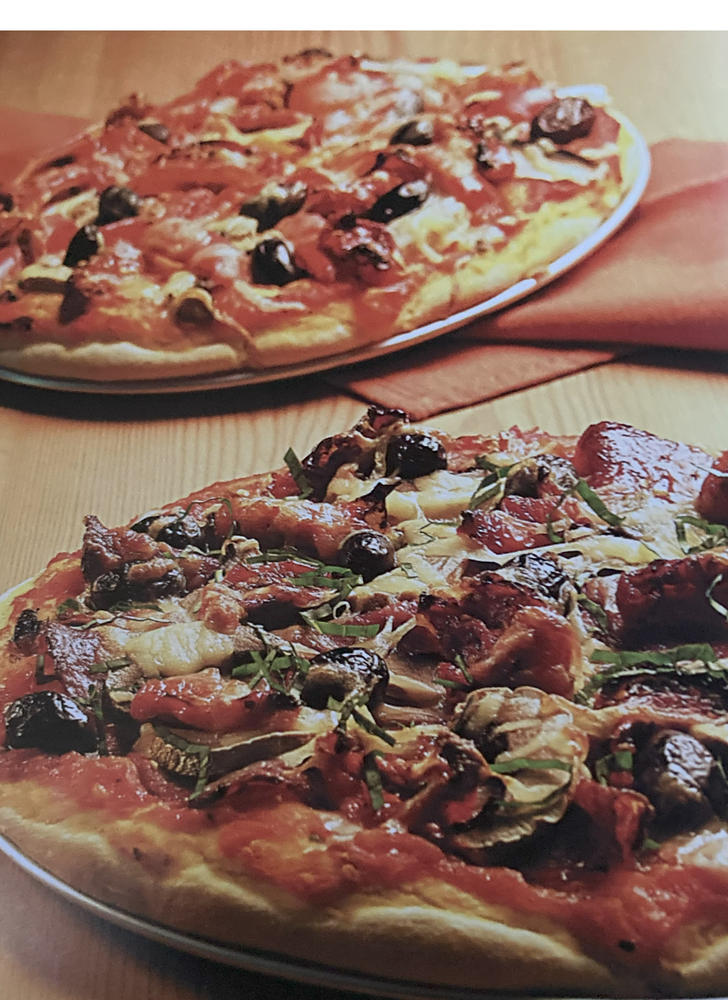

Italian Pizza

Ingredients
Switch to Steps
Base
-
1 lb Plain (All Purpose) Flour
-
1 cup Warm Water
-
1 Tbsp Dry Yeast
-
2 oz Carrot Juice
-
1/2 tsp Salt
Tomato Sauce
-
3 Tomatoes, sliced
-
Juice of 2 Tomatoes
-
2 Basil Leaves, chopped
-
1 clove Garlic
-
Pinch of Oregano
Toppings of Choice, e.g.
-
Mushrooms
-
Salami or Pepperoni
-
Olives
-
Mozarella
Steps
Switch to Ingredients
-
Make a well in the flour.
-
Mix 2 oz of warm water with the yeast and pour into the well in the flour
along with the carrot juice, remaining water and salt.
-
Preheat oven to 430F.
-
Mix together to form a dough and place in warm area to rest and rise.
-
For the sauce, cook the tomatoes, tomato juice, basil, garlic and oregano,
simmering until the sauce has reduced.
-
Press a piece of the dough, about the size of a tennis ball, onto a pizza tray
(or a large baking dish).
-
Spread the sauce onto the pizza dough.
-
Add your toppings.
-
Place in oven for 20 - 25 minutes.